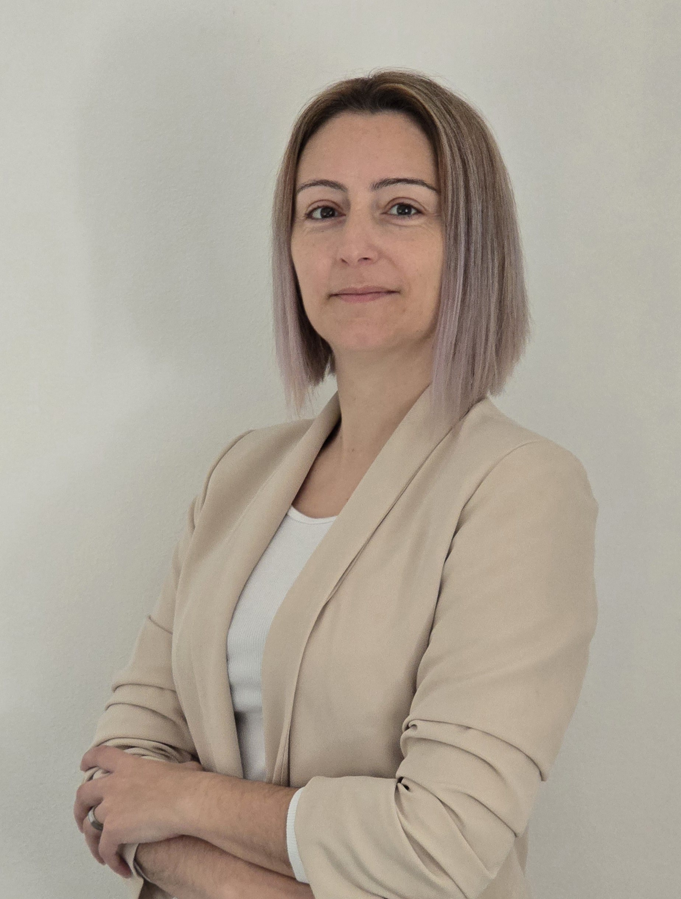

Vera Antunes
Alentejo, Portugal
Pedido de informação
melo.antunes012@gmail.com
Sexo: Feminino | Data de Nascimento: 07/05/1980 | Nacionalidade: Portuguesa

Alentejo, Portugal
Pedido de informação
melo.antunes012@gmail.com
Sexo: Feminino | Data de Nascimento: 07/05/1980 | Nacionalidade: Portuguesa
Formações Modulares Certificadas - IEFP
Formação FADTrabalhador independente - Artista plástico
Caixeira na loja Cesar´s Comércio de ourivesaria LDA
Isabel Cesar - LouresEstilista de unhas de gel e caixeira na loja Gragel
Graciete Serra - LouresJoalheira e caixeira na Galeria Reverso
Paula Crespo - LisboaEstagiária na Galeria Reverso
Paula Crespo - LisboaTécnico de Multimédia
Aguarda por certificado de qualificações - IEFPOperador informático
Certificado de qualificações - IEFPProgramação - Avançada
Certificado de qualificações - IEFPProficiência digital - nível 4
Certificado de qualificações - IEFPFrequência de 12º Ano
Escola Artística António Arroio - LisboaCertidão de Habilitações do 9º Ano
Escola EB 2 e 3 de Cesário Verde - LisboaPortuguês
| COMPREENSÃO | LEITURA | ESCRITA | |||
|---|---|---|---|---|---|
| Compreensão Oral | Leitura | Interação Oral | Produção Oral | Escrita | |
| Inglês | A2 | A2 | A2 | A2 | A1 |
| Francês | A1 | A1 | A1 | A1 | A1 |
Licença de condução: Tipo B | B1
1º prémio de reciclagem, 1º prémio de Design de joalharia interno da Escola Artística António Arroio